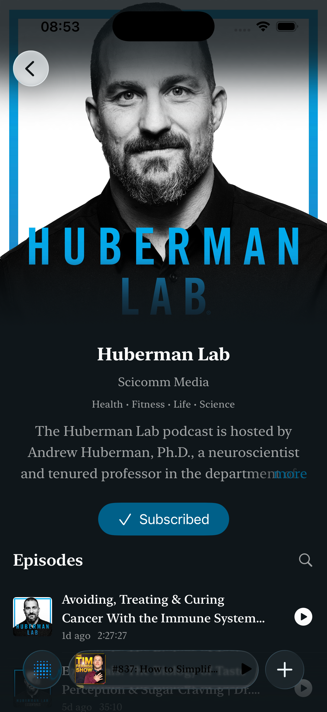
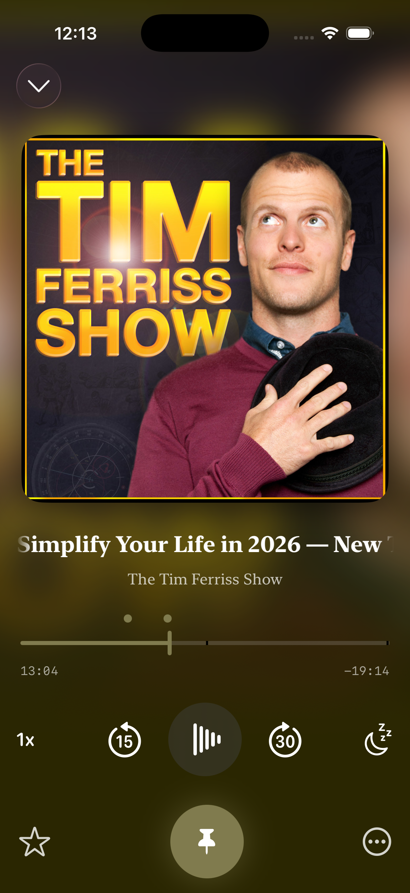
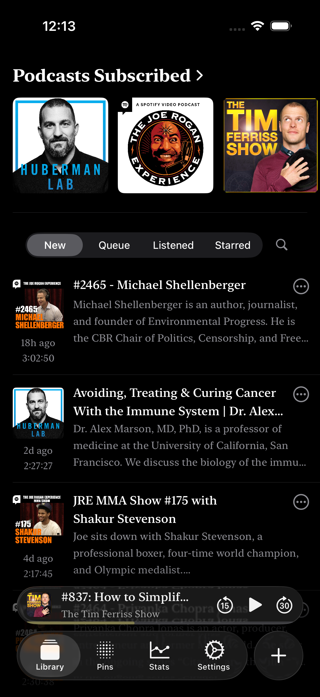
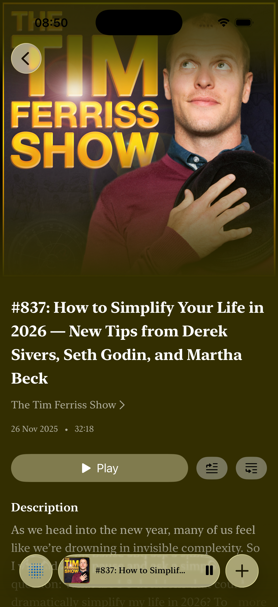
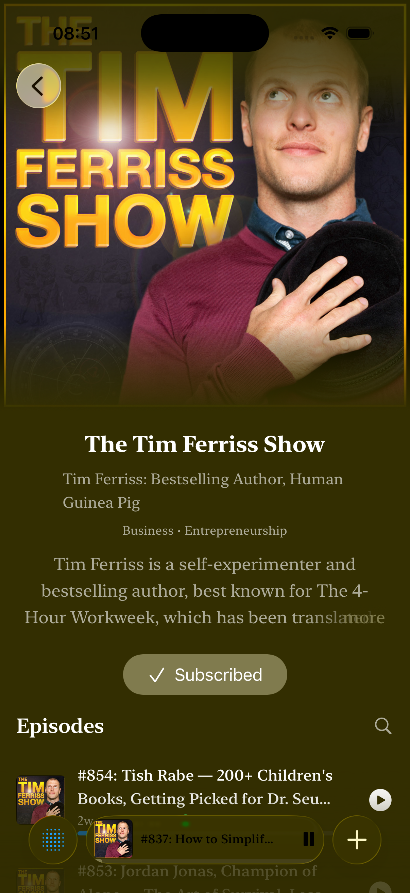
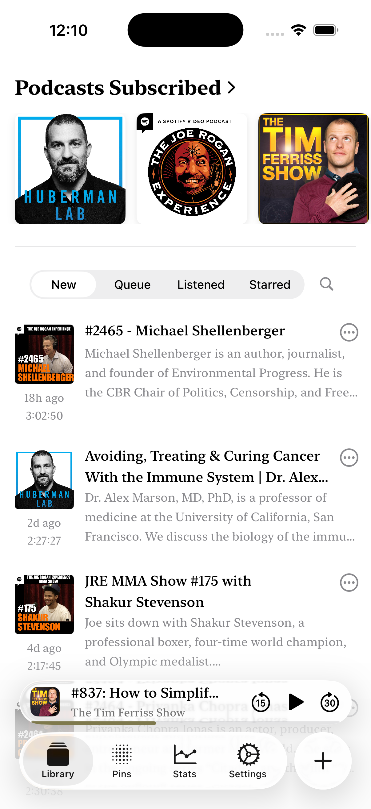

Escucha. Aprende. Recuerda.
El reproductor de podcasts con IA que convierte cada episodio en conocimiento buscable y guardable.




Nativo en iPhone, iPad y Mac
El reproductor de podcasts con IA que convierte cada episodio en conocimiento buscable y guardable.



Nativo en iPhone, iPad y Mac
Transcripciones automáticas en el dispositivo para que leas, busques y saltes a cualquier momento del episodio.

Este episodio explora cómo la IA en el dispositivo hace que las funciones de podcast sean más rápidas y privadas.
"redes neuronales" encontrado en 3 episodios
La IA genera ideas clave, capítulos y rastrea libros, películas y referencias mencionadas en cada episodio.

Thinking, Fast and Slow · Ex Machina · arxiv.org
Las redes neuronales procesan el lenguaje de forma similar a como los humanos desarrollan comprensión.
Guarda los momentos que importan. Añade notas, organiza por colores y crea tu base de conocimiento personal con cada podcast.

"Hay un par de regiones cerebrales que hacen esto, y son regiones muy especiales..."
3 destacados resumidos en ideas clave
Bonita en iPhone. Potente en Mac. Tu biblioteca, destacados y progreso se sincronizan sin fricción en todos tus dispositivos Apple.
Convierte cada podcast en conocimiento que puedes buscar, fijar y revisitar. Descarga Podpin gratis hoy.